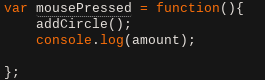

| Home | How 2 | Art | Art How 2 |
What is Generative Art
Generative Art in my opinion is art that is generated by the user but randomized and made fun by the computer. There technically is no right answer on what Art is. You grab a canvas either in real life or as an element and just draw
How does HTML5 draw the art
HTML5 does not draw the art infact HTML5 is not smart enought to even do math store variables or anything better that draw elements on a page. So then how are there webpages like Wolfram Alpha that can solve even make graphs. Thoose pages use a languadge called JavaScript or JS not to be confused with java. JS is a webkit languadge and Java is a compilable languadge. From js a smart group of people created a extension languadge called Proccesing it also works with Java and i think the +'s, The languedge allows you to use the CANVAS element and put it on an HTML page, then use predefined functons from proccesing like ellipse() line() and all of JS's futures to make a program.
JS I used
To explain how I made the page I need to first state all the functions and variables i used and why. These are my initial variables these set up the entire program. tracelist is assigned to a set of brackets. This makes tracelist an array. amount is set to 0 because there are no circles at the start of the program. The rest of the varibles are declared to be true, this just means that the program knows they exist and that some are a blank array and others just are a varible. I also used the: ellipse(), function which draws an ellipse at a specified point; the background() function, which will reset the background; and the line(); function to draw lines from point x,y to x1,y1. These are the functions proccesing has pre-defined for me to use while drawing on the screen, but theese functions are nothing without a way to execute them repeatedly.
Order and Structure
Code has to have structure, unlike syntax structure is what order the code is ran. if we strip my program of everything but if/elses and funtion definition we get the skeletion for my program it looks like this:
The order is simple and the code runs as follows first we define the function then if we have more than one circle we do something repeatedly. lets add something to the draw funtion and pretend that all the other function do what they were named to do,
Ok, now the comments on the code tell us what it does, If we have a circle move their location trace to all circle then draw the circles. Now if we had a library like proccesing where we could call the function predifined it would be really easy, but we don't. We have to actually define the functions and not imagine they are defined. We now have blank functions and we have the order of execution,If we go step by step by the order of definition of functions we will make the program work. Let's start with addCircle();
`Function: addCircle();
Here is the function defined.
WOAH!! That a lot of new stuff there like the .push and the Math.something library. To make sense of this let's go line by line first we add 1 to amount via the amount++; operation. xPos is assigned mouseX and yPos is assigned mouseY self explanatory in nature but where did thoose come from. Turns out proccesing makes life really easy by adding theese new functions, instead of having to eventListen for mousePressed then record their cordinates we use theese functions. d has a lot of math essentially we take a random() number from 0 to 300 with decimals involved we then take the square roor of it. We ceil it or round upwards number to reduce on computing time. Then add some diffence in the circles by multiplying it by 5. We also add 3 new vars r,g,b standing for red,green,blue respectively. Theese randomly color the circles then we store thoose varibles as a tuple in an array. In english we write them on a page and then store that page in a book. Great we now have a way to add entries into tracelist.
randomize();
We now have the set positions of our circles, but you may have noticed they move around. This is done via the randomize(); function.
The randomize function is a lot of random(); function theese are from proccesing and will give you a number from 0 to x where x is the number in the random(x); function. This will also give a bunch of decimals making the number a float or long depending on your prefrences. the for() loop is there to go threw each element of tracelist, when we add an element to tracelist we also add 1 to the amount function. We also add the items into tracelist inside of a [] this means that refrencing them would be done like so tracelist[i][j] where i is the circle number and j is either the position of the circle the diameter or color. Next up we have an if statement with another random function(); to move the circles in both dirrection we have to either add to their position or subtract from it, we know that the tracelist[i][0] is going to be the x position of the i'th circle [1] would be yPosition and so on. Now if the random(3); function is bigger than 1.5 we will subtract from the circle if its not then we will add to the position. Moving it up/down/left/right.
updatePlane();
We have the circle coordinates, but we dont draw them yet. Lets do that.
The updadePlane function updates the plane,(this does not include ray tracing) the function first uses the fill() function to fill the next shape with a dark-brown tone, it then draws an ellipse at the mouse coordinates with radius 25. then it runs a for loop that will go from 1 to the amount of circle we have, first the fill() function extracts the 3,4,5 values from the code, which be design are actually the rgb vallues that we assigned earlier. and then colors the ellipse that we draw with the correcspoing colors. Now warning, because we assign an empty list we start from the 0'th element this why I can start i at zero and end it one unit earlier without issue. The console.log() command was removed due to it cause a heck of a lot of lag.
rayTrace();
Time for our very complex ray tracing
Is this real Ray Tracing, NO; why? becuase real ray tracing would melt the chromebooks in half. This is a line() trace not ray. diffrence; I know my coordinates and angle. 2 things massive diffrence. Anyway, in this function we first redraw the background to clear all old images and lines. This function is actually called before the updatePlane function yet it is defined later, that is so i know for sure that my coordinates are final. Then we run 2 for() loops inbedded in each other. first being the for loop that links all circles together the second one taking each cirvle and drawing a line from it to every other circle in the array. Not the most efficient but the easiest. The last line just takes the last circle in the array and draws from it to me.
Misc Functions
These functions improve the running of the app, there are 2 in this particular instanse. The keyPressed(); and the mousePressed();

The keyPressed just resets the entire program. While the Mousepressed runs the addCircle(); function.
If you were to follow my tutorial step by step and rewritten each function step by step you would now have a beutifully useless art piece. Again thanks Mr.Hesby for spending your time and energy with our school.